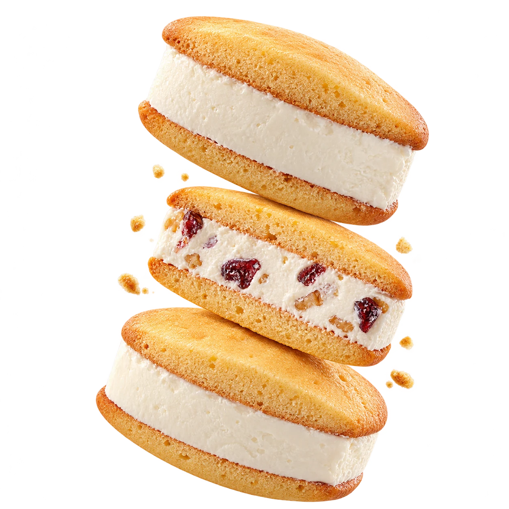
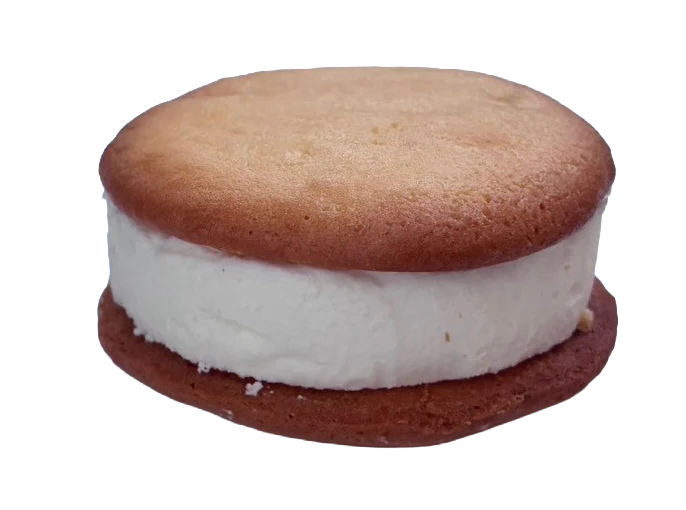
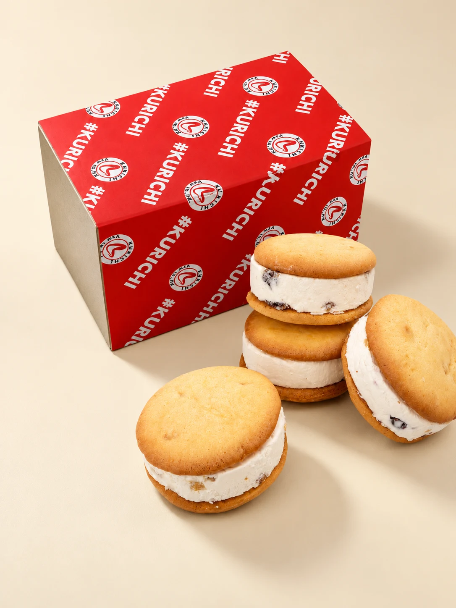
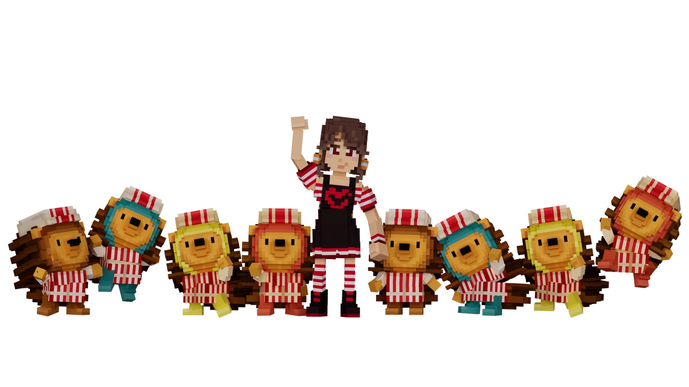

CREAM CHEESE, MADE FUN.WOOPEE / THE COOKIE SAND
KURICHI
WOOPEE by #kurichi
#クリチ、食べた？
クリームチーズで、
毎日をちょっと楽しく。
しっとりクッキーでクリームチーズをサンドした、ひんやりスイーツ「Woopee」。

A LITTLE BITE.A LOT OF HAPPY. ✳
CREAM CHEESE, BUT MAKE IT FUN.SCROLL TO EXPLORE ↓
BATTLE CLUB / WOOPEE #KURICHI
REAL BITES.
GOOD TIMES.
ウーピーと、楽しい時間。
音楽と笑顔に包まれた、
Woopee #kurichiのひとときを。
BATTLE CLUB / #KURICHI ✳
01 / THE IDEAABOUT #KURICHI
GOOD FOOD.
GOOD MOOD.
#KURICHI.
アメリカ生まれの
ウーピーパイに、
#クリチらしい遊び心を。
特製のしっとりクッキーで、クリームチーズを贅沢に使った#クリチdiscをサンド。アイスサンドのようにひんやり、口どけはなめらか。小さなひとくちに、ちょっと特別な気分を詰め込みました。
ブランドストーリーを読む
02 / PICK YOUR MOODWOOPEE / THE FLAVORS
PICK YOUR
FLAVOR.
気分で選ぶ、4つの味。
お気に入りは、どれ？
YOUR CURRENT CRAVING / 01

01 / 04
PLAIN
クリームチーズのコクを、まっすぐ楽しむ。まずはここから、王道のひとくち。
03 / SHARE THE GOOD MOODTHE GIFT
A LITTLE SOMETHING FOR SOMEONEGOOD
GOOD
THINGS
COME IN
RED BOXES.
あの人の「おいしい！」が、
目に浮かぶギフト。
手に取りやすいサイズのウーピーは、ちょっとした贈りものにも。冷たいおいしさを、大切な人へ。
ギフトを探す
04 / THE BEST BITEHOW TO ENJOY
STAY COOL.
THEN DIG IN.
ひんやりから、なめらかへ。
自分好みの食べごろを見つけて。
01 / KEEP
冷凍でキープ。
食べるまでは冷凍庫で。ひんやりおいしさをスタンバイ。
02 / WAIT
少しだけ解凍。
お好みに合わせて少し解凍。やわらかな口どけが広がります。
03 / BITE
さあ、ひとくち。
クッキーと#クリチdiscを一緒に。今日のご褒美時間へ。
05 / THE ORIGINAL LINEUPMORE #KURICHI
MEET THE
ORIGINALS.
いつものクリチも、どうぞ。
バンズで楽しむ、クリームチーズバーガー。ウーピーと一緒に、#クリチのラインアップを。
06 / MORE TO EXPLORETHE WORLD OF #KURICHI
SAME SPIRIT.
MORE TO LOVE.
KURICHI STICKER COLLECTIONスーパー
クリチマン
クリチマン
シール全20種を見る ↗

07 / WHAT'S NEWLATEST UPDATES